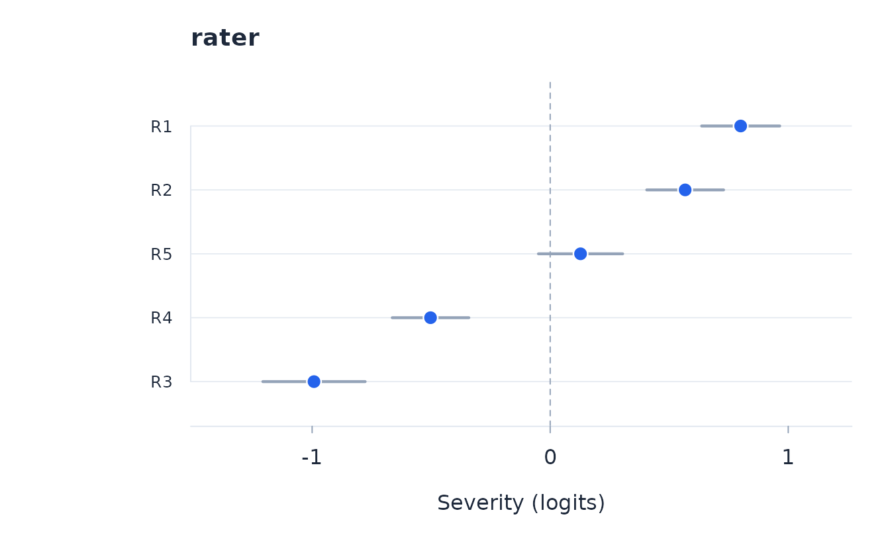

When to use the MFRM
The many-facet Rasch model (Linacre 1989) extends the Rasch model
(Rasch 1960) to responses jointly indexed by a person, an item, and one
or more measurement facets such as rater, task, or occasion. Use
rasch_mfrm for such designs. A positive facet parameter
denotes greater severity. Person-group variables such as sex or
treatment are not facets: carry them as person factors and assess them
with dif_anova.
d <- simulate_mfrm(n_persons = 60, n_items = 4, n_raters = 5,
rater_severity_sd = 0.7, seed = 8)
fit <- rasch_mfrm(d, person = "person", item = "item", score = "score",
facets = "rater")
fit
#> rasch many-facet analysis: 4 items x 5 rater level(s) = 20 virtual items, 60 persons
#> Pairwise conditional ML: converged in 7 iterations
#> PSI 0.923, power of fit: excellent
#>
#> Facet 'rater' severities (logits):
#> level severity se n fit_resid
#> R1 0.756 0.076 240 0.080
#> R2 0.585 0.076 240 -0.154
#> R3 -0.981 0.102 240 0.195
#> R4 -0.438 0.086 240 0.011
#> R5 0.077 0.080 240 -0.598
#> (pooled fit residuals and their df on fit$facet_effects)
#>
#> Notes: item I1:R3: only 0 response(s) in category 0; threshold(s) 1 and the item location are weakly determined (SE reported as NA) -- consider pc_components or collapsing categories; item I1:R4: only 2 response(s) in category 0; threshold(s) 1 and the item location are weakly determined (SE reported as NA) -- consider pc_components or collapsing categories; item I4:R1: only 0 response(s) in category 3; threshold(s) 3 and the item location are weakly determined (SE reported as NA) -- consider pc_components or collapsing categories; item I4:R2: only 2 response(s) in category 3; threshold(s) 3 and the item location are weakly determined (SE reported as NA) -- consider pc_components or collapsing categoriesRead the structural parameters
The model estimates item thresholds and facet severities together. Internally, each observed item-by-facet combination is a virtual item whose thresholds are the item thresholds shifted by the relevant facet effects. Pairwise conditioning removes the person parameter before calibration.
fit$item_effects
#> item location se n infit_ms outfit_ms fit_resid fit_resid_pooled
#> I1 I1 -0.9878 0.07403 300 1.0454 1.0586 0.1640 6.572e-01
#> I2 I2 -0.3274 0.06060 300 1.0540 1.0206 0.1115 3.518e-01
#> I3 I3 0.3856 0.06609 300 0.9904 0.9887 -0.0953 3.724e-05
#> I4 I4 0.9297 0.08963 300 0.9230 0.8778 -0.5534 -1.142e+00
#> df_fit
#> I1 281.2
#> I2 281.2
#> I3 281.2
#> I4 281.2
fit$facet_effects$rater
#> level severity se n infit_ms outfit_ms fit_resid fit_resid_pooled
#> R1 R1 0.75602 0.07612 240 1.075 1.0133 0.08018 0.2432
#> R2 R2 0.58538 0.07617 240 0.997 0.9561 -0.15377 -0.2990
#> R3 R3 -0.98133 0.10195 240 0.945 1.0751 0.19455 0.7361
#> R4 R4 -0.43750 0.08603 240 1.099 1.0101 0.01089 0.2096
#> R5 R5 0.07742 0.07959 240 0.905 0.8768 -0.59837 -1.1725
#> df_fit
#> R1 225
#> R2 225
#> R3 225
#> R4 225
#> R5 225
head(fit$item_thresholds)
#> item k tau se
#> 1 I1 1 -2.03833 0.2589
#> 2 I1 2 -0.99292 0.1751
#> 3 I1 3 0.06779 0.1446
#> 4 I2 1 -1.44758 0.2224
#> 5 I2 2 -0.46306 0.1713
#> 6 I2 3 0.92841 0.1720
plot_facets(fit, facet = "rater")
The design must connect facet levels through common items and
persons. A facet nested within an item or a person-disjoint block can be
confounded with item location. rasch_mfrm checks the
structural rank and informative co-observation graph and stops when the
decomposition is not identified.
Item-by-facet interaction
The additive model assumes that severity differences are invariant
across items. When the design and substantive question require it,
interaction adds item-by-level terms with double
sum-to-zero constraints.
fit_interaction <- rasch_mfrm(
d, person = "person", item = "item", score = "score",
facets = "rater", interaction = "rater"
)
head(fit_interaction$interaction_effects)
#> item level gamma se z p p_adj significant
#> 1 I1 R1 -0.15699 0.1788 -0.8782 0.3834 1 FALSE
#> 2 I2 R1 0.04113 0.1322 0.3111 0.7568 1 FALSE
#> 3 I3 R1 0.05905 0.1559 0.3788 0.7062 1 FALSE
#> 4 I4 R1 0.05680 0.1441 0.3943 0.6948 1 FALSE
#> 5 I1 R2 -0.07109 0.1451 -0.4899 0.6260 1 FALSE
#> 6 I2 R2 -0.08552 0.1542 -0.5547 0.5812 1 FALSE
fit_interaction$interaction_test
#> facet df wald f df2 p
#> 1 rater 12 5.993 0.4063 48 0.9541The interaction model retains equal discrimination, but comparisons among raters become item-dependent. A material interaction therefore qualifies the claim of invariant rater severity rather than merely improving fit. The joint Wald test is the primary test of the interaction family; individual cells are exploratory and adjusted by Holm’s method.
Diagnostics
The returned object is also a rasch fit over the virtual
items, so the usual fit, targeting, dependence, dimensionality, and
plotting functions remain available. MFRM margin tables additionally
report an equal-cell fit residual and a response-weighted pooled
residual. Their weighting differs, so both the design and the location
of any misfit should guide interpretation.
References
Andrich, D., and Marais, I. (2019). A Course in Rasch Measurement Theory: Measuring in the Educational, Social and Health Sciences. Springer.
Linacre, J. M. (1989). Many-Facet Rasch Measurement. Chicago: MESA Press.
Rasch, G. (1960). Probabilistic Models for Some Intelligence and Attainment Tests. Copenhagen: Danish Institute for Educational Research. (Expanded edition, 1980, Chicago: University of Chicago Press.)